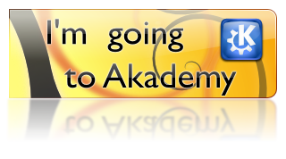

I am very happy to announce it:
This will be my first Akademy, I am quite excited to finally be able to meet people I only know via email or irc.
I won't be there for the whole week, but you can expect me to be present on the12th and 13th. Since I made my decision to go quite late, I had to book an hostel on my own. I will be staying at the Holiday Inn Express, feel free to get in touch via email or by commenting if you stay there too.
I am also quite happy that my employer, Open Wide / OS4I, is partly funding me, covering my travel expenses and giving me one day off to attend the "Embedded and Mobile Day".
See you in Mechelen!